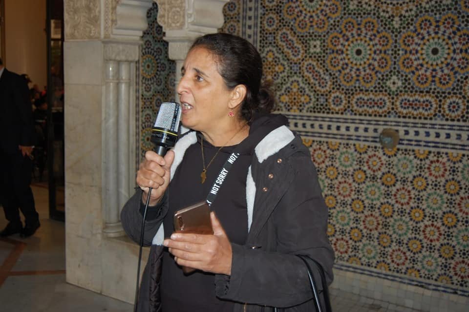

- 
من أين أتينا ؟
تأسست جمعية الرؤية المستقبلية في عام 2020 كوسيلة لمواكبة التطور التكنولوجي و الرقمي داخل المجتمع المغربي. هدفها تكوين جميع فئات المجتمع ( أميين/شباب/موظفين/ مطورين مبتدئين- ومتقدمين/مهتمين بالمجال الرقمي...) وتزويدهم بالأساليب والتقنيات و الموارد الازمة و كدا الفرص والخبرات التي تأهلهم للتـأقلم مع متطلبات سوق الشغل و الإنفتاح على العالم الرقمي الحديث.وتعتبر جمعية تطوعية،ودون أهداف ربحية، كما تعمل كذالك على تدريب عدد كبير من الطلبة المطورين
انشطة الجمعية
تتمحور أنشطة الجمعية على مسؤولية مساعدة الطلاب أو المطورين أو أي شخص مهتم بالنمو والاتساع في العالم الرقمي بينما يتعلم المطورون مهاراتهم ويطورونها. ويكون ذالك من خلال نشر جلسات المعلومات وورش العمل والأحداث والدورات وإعداد جلسات المتحدثين أو المسابقات أو التركيز على بناء المشاريع - الأمر متروك لجمعية الرؤية المستقبلية AFV لاختيار الجوانب التي يجب العمل عليها واختيار ما يناسب المجتمع.
الكثير من الاستكشاف
نحن كأعضاءفي جمعية الرؤية المستقبلية عازمون بشدة على إعادة تعريف رؤية القرن الحادي والعشرين من خلال إظهار التكنولوجيا لأولئك الذين يحتاجون إليها. من خلال التفكير في المستقبل المشرق لوجوه الشباب ، وذالك بتوسيع آفاقنا من أجل القضية ذاتها. مما سيعطي فرصة للمتعلمين حول مختلف التقنيات الناشئة مثل الجوّال وتطوير الويب ، والتعلم الآلي ، والذكاء الاصطناعي ، والأنظمة الأساسية السحابية ، وما إلى ذلك. علاوة على ذلك ، سيتم تنظيم عدد من ورش العمل من قبل زملاء خبراء الابتكار من جميع أنحاء المغرب ، مما يشجع المتعلمين على إيجاد حلول مبتكرة ، وذلك باستخدام التقنيات المتقدمة لحل المشاكل التي نواجهها المجتمعات المحلية.
انتفاع
ستكون جمعية الرؤية المستقبلية AFV مفتوحًة لأي شخص ، بدءًا من المطورين المبتدئين الذين بدأوا للتو ، إلى المطورين المتقدمين الذين يرغبون في زيادة تعزيز مهاراتهم. كما تهدف الجمعية إلى توفير مساحة للمتعلمين لتجربة أفكار جديدة والتعاون لحل مشكلات الجوّال وتطوير الويب وتعلم الآلة. لا يهم إذا كنت تستخدم تقنية استكشاف جديدة أو مطورًا خبيرًا يصوغ مشاريع معقدة ، فإن جمعية الروية المستقبلية"AFV"تكرم كل متعلمين لديهم شغف بالتكنولوجيا.والعالم الرقمي.
الإرشادات
عندما تنضم إلى الجمعية ، فإنك تنضم إلى مجتمع. ومثل أي مجتمع متزايد ، فإن بعض القواعد الأساسية حول السلوك المتوقع جيدة للجميع. تغطي هذه الإرشادات كلاً من السلوك عبر الإنترنت (مثل القوائم البريدية والقنوات الاجتماعية) وغير المتصل (مثل اللقاءات الشخصية). - يمكن أن تؤدي انتهاكات مدونة قواعد السلوك هذه إلى إزالة الأعضاء من الجمعية . استخدم أفضل حكم لك ، وإذا كنت ترغب في مزيد من الوضوح أو لديك أسئلة لا تتردد في التواصل معها. - كن لطيفا. نحن جميعًا جزء من نفس المجتمع ، لذا كن ودودًا ومرحبًا وشخصًا لطيفًا. كن شخصًا يريد الآخرون التواجد حوله. - كن محترم وبناء. تذكر أن تكون محترمًا وبناءً في اتصالاتك مع الأعضاء الآخرين. لا تدخل في حروب اللهب ، أو تشن هجمات شخصية ، أو تنفيس ، أو تنخرط بشكل غير بناء. يجب على الجميع تحمل المسؤولية تجاه المجتمع وأخذ زمام المبادرة لإزالة التوتر ووقف الخيط السلبي في أقرب وقت ممكن. -كن متعاونًا. العمل معا! يمكننا أن نتعلم الكثير من بعضنا البعض. تبادل المعرفة ومساعدة بعضهم البعض. - مشاركة. شارك في المناقشات ، واحضر الاجتماعات الشخصية بانتظام ، وقدم ملاحظاتك ، وساعد في تنفيذ تلك التعليقات. -تنحي بعناية. إذا كان لديك شكل من أشكال المسؤولية في مجتمعك ، فكن على دراية بالقيود الخاصة بك. إذا كنت تعلم أن وظيفة جديدة أو وضع شخصي سيحد من وقتك ، فابحث عن شخص يمكنه تولي المسؤولية لك ونقل المعلومات ذات الصلة (جهات الاتصال وكلمات المرور وما إلى ذلك) - الاستفادة متاحة لجميع الذين يستوفون المعايير الصحيحة ، دون تمييز على أساس العرق أو اللون. الدين أو الجنس أو الأصل القومي أو الإعاقة